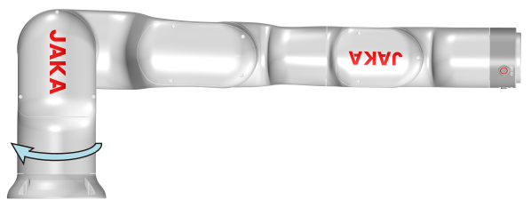
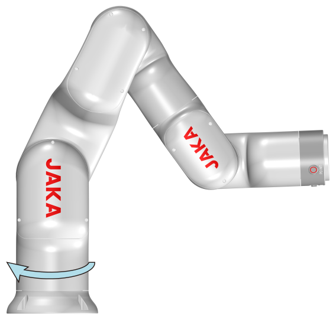

6. Technical Data
6.1. Technical Specifications
6.1.1. Robot Technical Specifications
Model |
Mini2 |
Mini2C |
|---|---|---|
Payload |
2 kg (4.4 lb) |
|
Weight (including cables) |
9.9 kg (21.8 Ib) |
|
Reach |
580 mm (22.8 in) |
|
Repeatability |
±0.05 mm (±0.002 in) |
±0.1 mm (±0.004 in) |
Degree of freedom |
6 |
|
Programming |
Graphical programming, and freedrive programming |
|
Demonstrator type |
Mobile terminal (computer/pad/mobile phone) |
|
Collaborative operation |
Collaborative operation as ISO 10218-1: 2011 |
|
Range of action |
||
Joint 1 |
±360° |
|
Joint 2 |
±125° |
|
Joint 3 |
±130° |
|
Joint 4 |
±360° |
|
Joint 5 |
±120° |
|
Joint 6 |
±360° |
|
Joint speed |
||
Joint 1 |
180°/s |
|
Joint 2 |
180°/s |
|
Joint 3 |
180°/s |
|
Joint 4 |
180°/s |
|
Joint 5 |
180°/s |
|
Joint 6 |
180°/s |
|
Tool max speed |
1 m/s (3.3 ft/s) |
|
Average power consumption |
180 W |
|
Temperature |
0~50°C (32~122°F) 1 |
|
Humidity |
0~90% RH, non-condensation |
|
IP |
IP40 |
|
Robot mounting |
Mounting at any angle |
|
Base diameter |
124 mm (4.9 in) |
|
Tool I/O port |
2 digital inputs
2 digital outputs
2 analog inputs
|
|
Tool I/O power supply |
24 V DC |
|
Tool I/O size |
M8 |
|
Tool I/O cable length |
400 mm (15.7 in) |
|
Material |
Aluminum alloy, PC |
|
Length of robot connection cable |
6 m (236.2 in) |
|
1 When the ambient temperature is below 10°C, warm up the robot before use; otherwise, the robot may stop or operate at a reduced speed.
6.1.2. Control cabinet technical specifications
Model |
MiniCab Lite |
MiniCab Pro |
|
|---|---|---|---|
Weight |
1.3 kg (2.9 Ib) |
||
Dimensions (W*D*H) |
194*144*51 mm (7.6*5.7*2.0 in) |
||
IP classification |
IP20 |
||
Material |
Aluminum alloy |
||
Voltage |
48V DC |
||
Communication |
Ethernet |
2*Gigabit Ethernet |
3*Gigabit Ethernet |
Industrial protocols |
TCP/IP，Modbus TCP，Modbus RTU，PROFINET，Ethernet/IP |
TCP/IP，Modbus TCP，Modbus RTU，PROFINET，Ethernet/IP，EtherCAT Master |
|
I/O port |
8*DI (NPN)
8*DO (NPN)
|
||
I/O power supply |
24 VDC |
||
Temperature |
0~50 ºC (32-122 ºF) |
||
Humidity |
10~90%RH |
||
Altitude |
≤1000 m (3281 ft) |
||
Atmospheric pressure |
1 Bar |
||
6.2. Dimensional Drawings
6.2.1. Robot Outline Dimensions
The sizes of the Mini robots are shown below. During the installation, the motion range of the robot must be considered to avoid injury to or collision with surrounding personnel and equipment.

Figure 6.1 Outline dimensions
6.2.2. Robot Working Space
When the robot is mounted, a cylindrical space must be considered. Due to the robot being in close proximity of a singularity, it is recommended to keep the robot end outside of this workspace. If the previously mentioned recommendations are not followed, the robot might perform at lower efficiency and create difficulties in the risk assessment. The working space of the Mini robots are shown below.

Figure 6.2 Working space
6.2.3. Control Cabinet Dimension

Figure 6.3 Outline dimensions of control cabinet
6.3. Electrical Specifications
This chapter describes the electrical specifications and parameters of the control cabinet interfaces and harnesses.
Warning
Operate the robot and control cabinet within the recommended electrical parameters. Exceeding the specified limits may cause permanent damage to the control cabinet hardware.
6.3.1. Electrical Specifications of Power
Electrical specifications of control cabinet are as follow.
Min. |
Typ. |
Max. |
Unit |
|
|---|---|---|---|---|
Power Input |
20 |
48 |
60 |
V DC |
6.3.2. Electrical Specifications of I/O Interfaces
The I/O is designed in accordance with IEC 61131-2. It supports 16 channels of digital input and 16 channels of digital output. The electrical specifications for the I/O are shown in the table below:
Min. |
Typ. |
Max. |
Unit |
||
|---|---|---|---|---|---|
Digital input |
Voltage |
15 |
24 |
30 |
V |
Current |
0.5 |
2 |
2.5 |
mA |
|
OFF region (PNP) |
–3 |
0 |
8 |
V |
|
ON region (PNP) |
15 |
24 |
30 |
V |
|
Description |
/ |
NPN |
/ |
Type |
|
IEC 61131-2 |
/ |
Type1 |
/ |
Type |
|
Digital output |
Single Channel Current |
/ |
0.5 |
/ |
A |
Voltage drop |
/ |
1.8 |
/ |
V |
|
Leakage current |
/ |
0.5 |
/ |
mA |
|
Description |
/ |
NPN |
/ |
Type |
|
IEC 61131-2 |
/ |
Type1 |
/ |
Type |
6.3.3. Typical Power Consumption
Typical power consumption of control cabinet:
Parameters |
Typ. |
Unit |
|---|---|---|
Standby Power Consumption |
9 |
W |
Startup Power Consumption |
15 |
W |
Robot Power On Consumption |
24 |
W |
6.3.4. ESD Sensitive
ESD (electrostatic discharge) is the transfer of electrical static charge between two bodies at different potentials, either through direct contact or through an induced electrical field. When handling parts or their containers, personnel not grounded may potentially transfer high static charges. This discharge may destroy sensitive electronics.
Use one of the following alternatives:
Use a wrist strap. Wrist straps must be tested frequently to ensure that they are not damaged and are operating correctly.
Use an ESD protective floor mat. The mat must be grounded through a current-limiting resistor.
Use a dissipative table mat. The mat should provide a controlled discharge of static voltages and must be grounded.
6.3.5. Line Fusing
There is no integrated fuse inside the control cabinet. Add an external fuse (time-delay) or circuit breaker (class K) according to full load current in Electrical Specifications of Power. The following table shows the recommended rating for an external fuse or circuit breaker.
Robot |
Current |
Description |
|---|---|---|
Mini2，Mini2C |
125 VDC, 1 phase |
10 A |
6.3.6. Residual Current
An external earth fault protection (residual current device, RCD) is required based on the following residual current data in control cabinet:
Robot |
Residual Current in Control Cabinet |
|---|---|
Mini2，Mini2C |
＜30 mA |
6.4. Indicators
6.4.1. Ring-Shaped Light
Ring‑shaped indicator light on the base indicates the robot status. The position of the ring-shaped lights is shown in figure below.

Figure 6.4 Ring-shaped light
Color |
Robot State |
|---|---|
Blue |
Powered on but disabled |
Green |
Enabled |
Red |
Failure/Protective stop |
Yellow |
Freedrive mode |
Yellow flash |
Pause |
Yellow flash |
Single-step program debugging |
6.4.2. Control Cabinet Light
6.4.2.1. MiniCab Lite Light
The MiniCab Lite has an indicator light on the front panel. The color definitions are as follows.

Figure 6.5 Power indicator
Name |
Function |
|---|---|
Power indicator |
Green: control cabinet is powered up |
6.4.2.2. MiniCab Pro Light
The MiniCab Pro has two indicator lights — a power indicator and a status indicator — both located on the front panel.
6.4.2.2.1. Power Indicator

Figure 6.6 Power indicator
The color definitions of power indicator are as follows.
Color |
Function |
|---|---|
Green |
Control cabinet is powered up |
6.4.2.2.2. Status Indicator

Figure 6.7 Status indicator
Color |
Robot State |
|---|---|
Blue |
Powered on but disabled |
Green |
Enabled |
Red |
Failure/Protective stop |
Yellow |
Freedrive mode |
Yellow flash |
Pause |
Yellow flash |
Single-step program debugging |
6.5. Buttons
6.5.1. Free and Point Buttons
The robot is equipped with a tool I/O interface (TIO) and two buttons on the side of the flange. The two buttons are a freedrive button (FREE) and a point recording button (POINT), as shown in figure below.

Figure 6.8 Free and point button
When the Free button is pressed, the robot enters the freedrive mode. The robot can be dragged to the desired position manually.
The Point button is used with the Coboπ. When this button is pressed, the corresponding position will show up in the programming interface of the App as a command (see Coboπ Software User Manual for details).
Warning
User must first assess the risks before using the free drive and point buttons. Ensure that the robot’s mounting orientation, end payload, TCP, and other parameters are correctly set, otherwise it may cause injury to personnel or damage to the equipment.
6.5.2. Control Cabinet Buttons
6.5.2.1. MiniCab Lite Button
The power button of MiniCab Lite is located on the front panel and is used to power the device up and down as follows:

Figure 6.9 Power button
Power up: Press the POWER button for 1 seconds, and then the control cabinet will be powered up.
Power down: Press the POWER button for more than 3 seconds, and then the control cabinet will be powered down.
6.5.2.2. MiniCab Pro Button
6.5.2.2.1. Power Button
The power button of MiniCab Pro is located on the front panel and is used to power the device up and down as follows:

Figure 6.10 Power button
Power up: Press the POWER button for 1 seconds, and then the control cabinet will be powered up.
Power down: Press the POWER button for more than 3 seconds, and then the control cabinet will be powered down.
6.5.2.2.2. Network Reset Button

Figure 6.11 Network reset button
RST Wi-Fi: Control cabinet's Wi-Fi reset button. Press and hold for 8 seconds, the Wi-Fi configuration is restored to factory default settings. This includes all parameters configured within the Coboπ “Wi-Fi Settings > AP Device Networking” interface.
The reset button is housed in a 2 mm diameter bore and can be depressed using a 1.5 mm slotted ESD-safe screwdriver.
6.6. Robot Calibration Orientation
The robot calibration orientation is the orientation adopted during robot calibration. Calibration marks are stuck onto joints and tubes, being used for recalibration after joint replacement. When all adjacent marks are aligned, the robot is in the calibration orientation.
The joint angles for the calibration are listed below.
Joint 1 |
Joint 2 |
Joint 3 |
Joint 4 |
Joint 5 |
Joint 6 |
|---|---|---|---|---|---|
0° |
0° |
0° |
0° |
0° |
0° |

Figure 6.12 Robot calibration orientation
6.7. Robot Rotation Direction
Refer to Robot Technical Specifications for robot rotation range. The rotation direction is as follows:

Figure 6.13 A5L rotation direction
6.8. Robot Singularity
Singularities are positions described in Cartesian space that have no impact on MoveJ. When the robot is at a singularity, replace the Cartesian movement by MoveJ if the motion can be achieved by MoveJ. If there is singularity in the middle of the robot’s motion path, the robot’s trajectory can be changed to bypass the singularity. You can also change the robot's mounting position or the size of the end effector to change the value of Cartesian points in the robot's joint space. A singularity is a robot arm configuration where one or more degrees of freedom are lost causing the robot to be stuck in a position and unable to move. This usually occur when joint axes align in one way or another.
When a robot is at a singularity, the following effects may occur:
Robots cannot move in one or more directions.
The robot cannot find a suitable set of joint angles for the TCP to move to the desired position.
The robot joint should move at high speed to achieve the desired TCP speed.
Intense movements near singularities will result in accidents and shorten the lifespan of robot joints.
The robot has three types of singularities: shoulder singularities, elbow singularities and wrist singularities. Descriptions and avoidance methods of the singularity are as follows.
Shoulder singularity: When the axes intersection of the joint 5 and joint 6 lies on the plane of axes of joint 1 and joint 2, the robot is at shoulder singularity.

Figure 6.14 Shoulder singularity
Ways to avoid shoulder singularity:
Ensure that the robot TCP is not directly above the robot base. TCP cannot reach the positions directly above the robot. A shoulder singularity will occur if the TCP approaches a position directly in line with the base Z axis.
Do not use MoveL when the angle of joint 1 is 180 between two points in space. When the difference is about 180°, the robot reaches shoulder singularity. You can use MoveJ to avoid singularity or set an intermediate transition point outside the shoulder singularity range.
Elbow singularity: When joints 2, 3 and 4 are coplanar or when joint 3 is 0°, the robot is at elbow singularity.

Figure 6.15 Elbow singularity
Ways to avoid elbow singularity:
When the robot is at an elbow singularity, it indicates that the target position is close to the limits of the working range of the robot. At this point, it is necessary to adjust the robot mounting position or extend the length of the end effector.
Wrist singularity: When joint 4 and joint 6 are collinear or when joint 5 is 0°, the robot is in wrist singularity.

Figure 6.16 Wrist singularity
Ways to avoid wrist singularity:
The wrist singularity typically occurs in movements with orientation changes. Therefore, in cases of considerable orientation change, it is advisable to prioritize MoveJ and not use Cartesian motions such as MoveL or MoveC.
6.9. Control Stick Buttons
The JAKA robot comes with a control stick, which can be used to control both the robot and the control cabinet. The functions of the control stick buttons are described as follows:

Figure 6.17 Control stick
Name |
Description |
|
|---|---|---|
1 |
Emergency stop button |
For emergency stop. The emergency stop button is intended only for emergencies and must not be used as a normal power-off device. |
2 |
Power up/down button |
Power up: Press the power button for 1 second and release. The buzzer beeps once, and the control cabinet is powered up. Power down: Press and hold the power button for 3 seconds or more. The control stick beeps 6-7 times, and the control cabinet is powered down. |
3 |
Enable button |
Robot power on: Press the enable button once and wait for the ring-shaped light to turn blue, indicating that the robot is powered on. Robot power off: Press the enable button once and wait for the ring-shaped light to go off, indicating that the robot is powered off. Enable robot: When the robot is powered on, press and hold the lock button, and then press the enable button at the same time until the ring-shaped light turns green and a click is heard, which means the robot is enabled. Disable robot: When the robot is enabled, press and hold the lock button, and then press the enable button at the same time until the ring-shaped light turns blue and a click is heard, which means the robot is disabled. |
4 |
Start/stop button |
Start the program: Press the button to start the default program, execute the default program after the robot reaches the initial position of the program. Stop the program: Press to stop the program when the robot runs the program. |
5 |
Reset button |
Reset: After the robot is enabled and while no program is running, press and hold the button to move the robot to the initial orientation configured in Coboπ. When the robot reaches this position, press and hold the button again; the lock indicator breathes blue. |
6 |
Pause/resume button |
Pause: During the automatic operation of the robot, press the button to pause the program. Resume: Press the button to resume the program when the program is paused. |
7 |
Lock button |
Lock the control stick: Press and hold the lock button until the indicator turns orange. Unlock the control stick: Press and hold the lock button until the indicator turns off. Combination function: Other buttons can be used with the lock button. |
8 |
Lock indicator |
Lock state: In the lock state, the indicator is orange, and all buttons except the lock button and power button are disabled. The App can now control the robot. Unlock state: In the unlock state, all lights turn off, and the control stick can be used. The App cannot be used to control the robot in this state. |
9 |
Control stick indicator |
When powering on the control cabinet, the control stick indicator first shows red, blue and green alternately with three beeps, and then it turns orange, waiting for the control cabinet to power up. After activating, the control stick indicator will flash blue. After powering on the robot, the control stick indicator will flash blue. After enabling the robot, the control stick indicator will flash green. When the robot is in the emergency stop status and protective stop status, the control stick indicator flashes red. |
Note
Once the control cabinet is powered up, the control stick will beep twice per second if any button is pressed.
When using the control stick to operate the robot, ensure that the robot you are operating is within your sight and follow the relevant safety guidelines to avoid any injury to personnel or equipment near the robot.
6.10. Performance Data
6.10.1. Load Capacity of the Robot
The maximum payload of the robot is related to the offset of the gravity center, and degree of the offset is related to the distance between the center of robot end flange and the payload centroid. Figures below show the relation between the payload and the offset of the gravity center:
X: Center of gravity offset
Y: Payload

Figure 6.18 Load capacity
Note
Offset distance is the center of gravity distance from the center of the flange.
6.10.2. Stopping Time and Distance
The time from the application of a stop signal to the standstill of the robot is measured. This measurement is carried out for various reaches and velocities (measurement according to ISO 10218-1).
Safety stopping time is the time it takes to stop the robot from the moment when the emergency stop button is pressed or a safety protection function is triggered. The stopping distance is the distance the end of the robot moves during the safety stopping time. Among them, pressing the emergency stop button falls into Cat.1, while triggering the safety protection function falls into Cat.2. During this period, the robot is still moving and may harm the personnel or other equipment. Therefore, users and integrators should consider this time and distance in risk assessment.
The test conditions are as follows:
Speed: 100%, 66%, 33%
Reach: 100%, 66%, 33%
100% Reach |
66% Reach |
33% Reach |
|
|---|---|---|---|
Joint 1 |
 |
 |

|


100% Reach |
66% Reach |
33% Reach |
|
|---|---|---|---|
Joint 2 |

|

|

|
100% Reach |
66% Reach |
|
|---|---|---|
Joint 3 |

|

|
Load: See the table below.
Model |
Payload |
|---|---|
Mini2，Mini2C |
2 kg (4.4 lb) |
See Appendix 1: Stopping Time and Distance for the respective stopping distance and time of Cat.1 and Cat.2.
Warning
Breakdown of the internal joint holding brake:
Take into account a possible breakdown of the internal joint holding brake during your risk assessment.
Take into account that the internal joint holding brake of the JAKA robot only withstands a limited number of brake operations.
Failure to follow these instructions can result in death, serious injury, or equipment damage.
If there is a power interruption of the control system, the brakes are applied and the robot mechanics may leave the planned trajectory.
Warning
Leaving the planned trajectory of the robot mechanics:
Use the buffering of the 24 V supply (UPS) in order to enable a controlled stop of the mechanics, in accordance with stop category 1, by making use of the stored residual mechanical and electrical energy.
Use a synchronous stop on the path to avoid collisions with obstacles.
Observe the extension of the run-on path while performing your risk assessment.
Failure to follow these instructions can result in death, serious injury, or equipment damage.
6.10.3. Forces and Torques on Robot Base
The illustration shows the directions of the robot stress forces.

Figure 6.19 Directions of forces and torques on robot base
The table below shows the maximum forces and torques in various directions working on the robot base.
Mini2, Mini2C |
|
|---|---|
Fx, Fy |
120 N (27 Ibf) |
Fz |
140 N (31 Ibf) |
Mx, My |
100 Nm (885 Ibf·in) |
Mz |
90 Nm (797 Ibf·in) |
Attention
These forces and torques are maximum values that are rarely encountered during operation. The values also never reach their maximum at the same time!
6.10.4. Torques on Robot Flange
The table below shows the maximum torques working on the robot flange.
Robot Model |
Mini2, Mini2C |
|---|---|
Torque |
14 Nm (124 Ibf·in) |
Comments